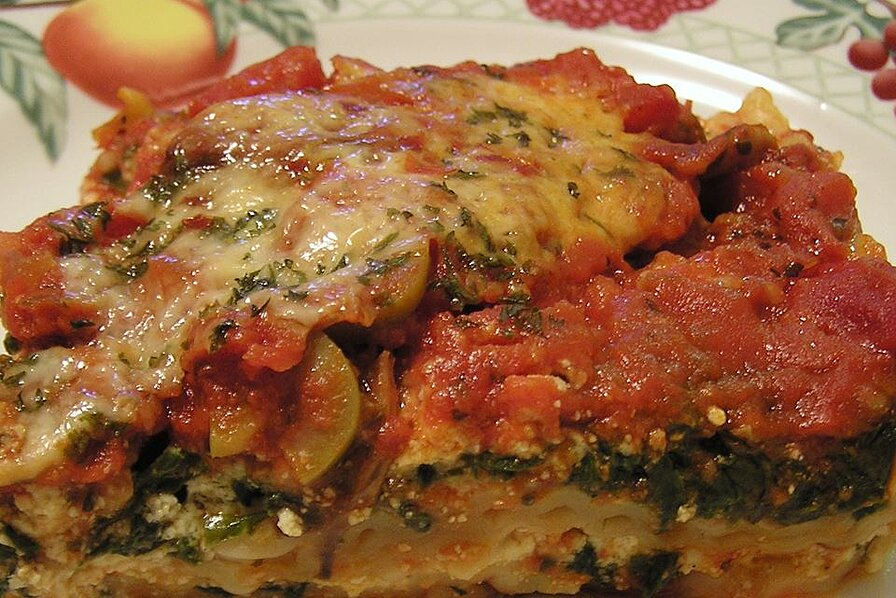

Hearty Vegetable Lasagna

Description
This hearty, vegetable lasagna is the only lasagna my husband will eat. We love it!!! Hope you all enjoy as much as we do.
Ingredients
- 1 (16 ounce) package lasagna noodles
- 1 pound fresh mushrooms, sliced
- ¾ cup chopped green bell pepper
- ¾ cup chopped onion
- 3 cloves garlic, minced
- 2 tablespoons vegetable oil
- 2 (26 ounce) jars pasta sauce
- 1 teaspoon dried basil
- 1 (15 ounce) container part-skim ricotta cheese
- 4 cups shredded mozzarella cheese
- 2 eggs
- ½ cup grated Parmesan cheese